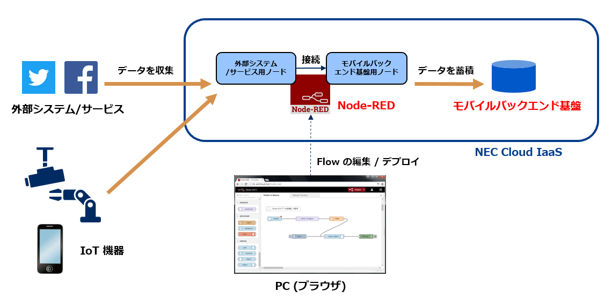

1. はじめに¶
本文書は、モバイルバックエンド基盤 Node-RED 利用手順書です。
1.1. Node-RED とは¶
Node-RED は IoT デバイスからのデータ収集･加工やオンラインサービスとの接続をサポートする開発用ツールです。
IBM がオープンソース(Apache License 2.0)として開発したツールであり、現在は NodeRedサイト[国外] , NodeRedサイト[国内] で情報が公開されています。当初は IoT 向けでしたが現在では Web アプリ開発等の幅広い用途で利用されています。
ブラウザ UI ベースで視覚的にパーツ(ノード)を組み合わせるようにして Web アプリを作成できます。 ノードと呼ばれるモジュールを組み合わせることで様々なオンラインサービス(Twitter, AWS, Microsoft Azure等)との連携もできます。
{kind=link}
Node-RED に様々な公開ノードを追加することで、モバイルバックエンド基盤と連携可能な他社製品･サービスを拡張できます。 主要なクラウドサービス、データベース、SNSのデータ連携の例として以下のようなものがあります。 Node-RED は用途に応じて、クラウド等のサーバサイドで動作させる場合や IoT 機器等のクライアントサイドで動作させる場合があります。
- Twitter や Facebook のつぶやきを収集･加工してクラウド上に蓄積する（ Web アプリ相当）
- IoT デバイス(スマホセンサー等)の情報をクラウド上に収集･蓄積する ( IoT アプリ相当)
- クラウド上に蓄積した情報を取得･分析する
{kind=link}
1.2. モバイルバックエンド基盤の Node-RED 対応¶
モバイルバックエンド基盤と外部システムのデータ連携を促進するため、モバイルバックエンド基盤(サーバ)へのアクセス手段を備える Node-RED 対応モジュール(以下、NEC BaaS ノード)を提供しています。
提供する機能(NEC BaaS ノード)は以下のとおりです。
- NEC BaaS への認証(パスワード認証/クライアント証明書認証)に使用するノード
- NEC BaaS に登録されたユーザ情報を取得するノード
- NEC BaaS サーバのオブジェクトストレージからデータ取得するノード
- NEC BaaS サーバのオブジェクトストレージへデータを保存するノード
- NEC BaaS サーバが提供する様々な機能へのアクセス手段を JavaScript で記述できるノード
- NEC BaaS サーバの管理下にあるクライアント端末に Push 送信するノード
- NEC BaaS サーバに登録された API (プログラム)を実行するノード
- Device から NEC BaaS サーバへ reported データを送信するノード
- NEC BaaS サーバで発生した desired 更新イベントを Device 側で受信するノード